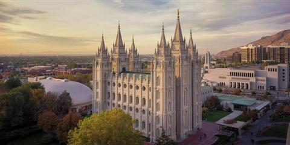
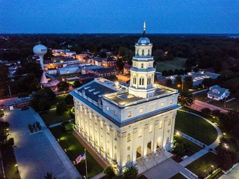
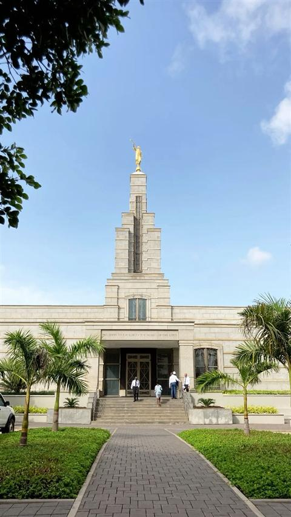
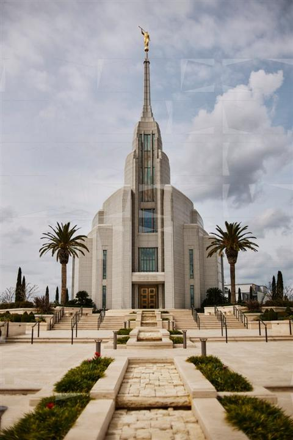
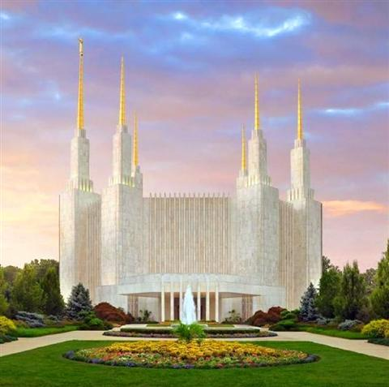
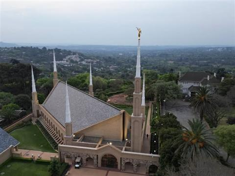
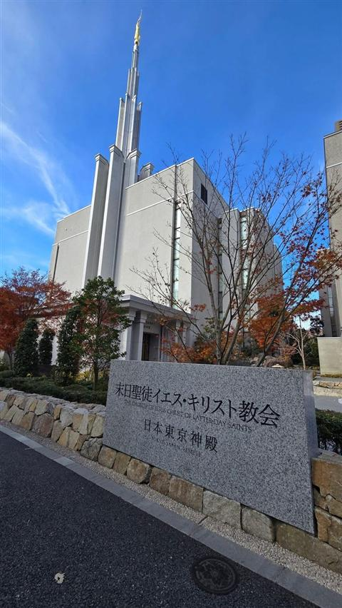

Temples

Salt Lake Temple — Salt Lake City, Utah

Nauvoo Illinois Temple — Nauvoo, Illinois
Kinshasa Democratic Republic of the Congo Temple
Paris France Temple — Le Chesnay, France

Accra Ghana Temple — Accra, Ghana

Rome Italy Temple — Rome, Italy

Washington D.C. Temple — Kensington, Maryland

Johannesburg South Africa Temple — Johannesburg

Tokyo Japan Temple — Tokyo, Japan